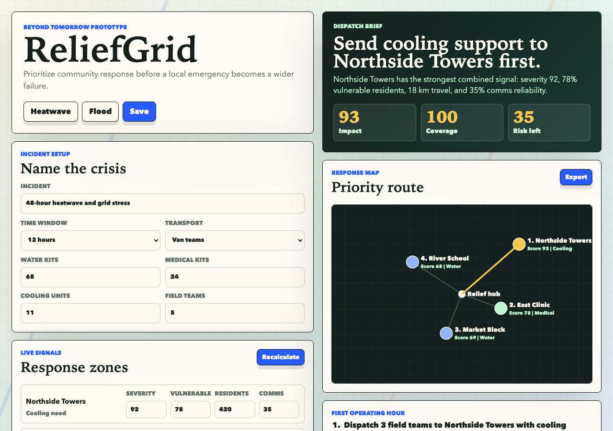
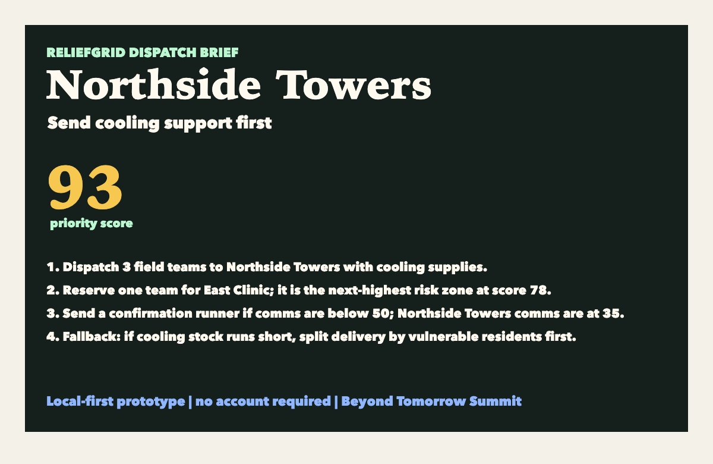
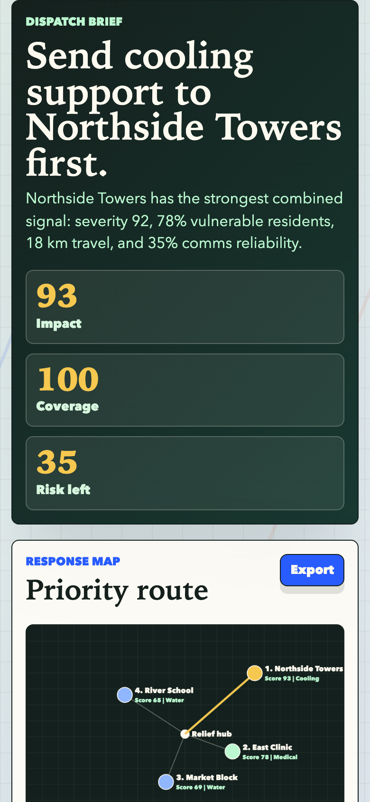

ReliefGrid Devpost Handoff
ReliefGrid
Copy final fields, verify media, then let the user submit.
ReliefGrid Devpost Handoff
Copy final fields, verify media, then let the user submit.
Required deliverables
Demo video
reliefgrid-demo-video.webm is generated locally. Use demo-video.html as the GitHub Pages video URL after publishing.
Pitch deck
Screenshot order


